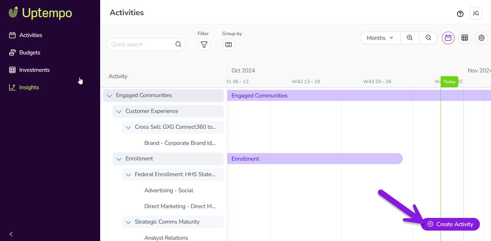
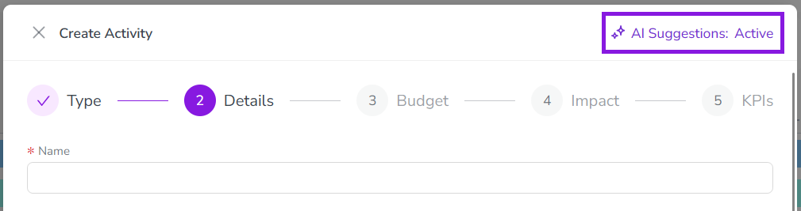
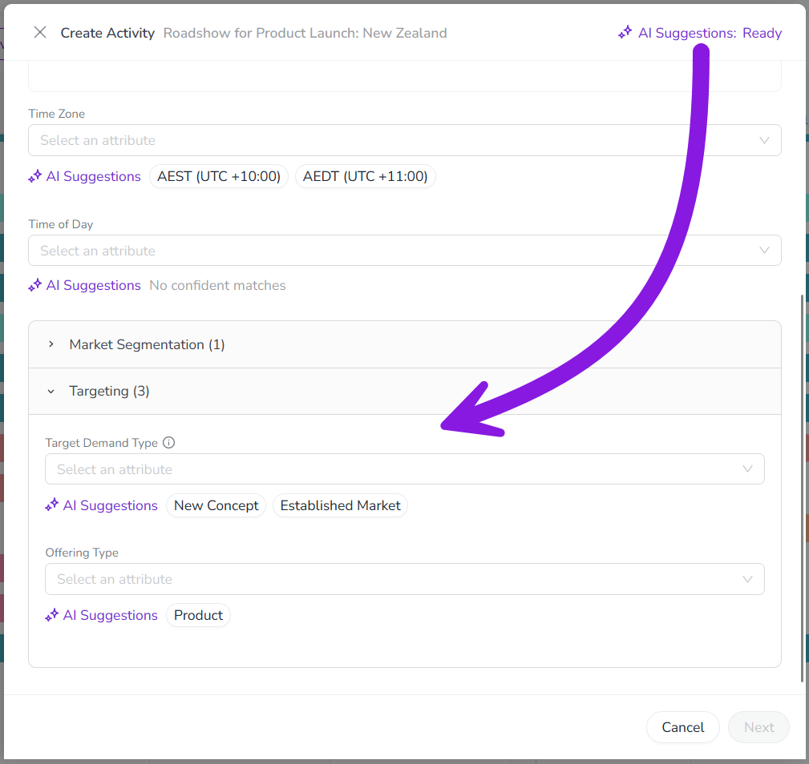

Create activities
An activity is any planned initiative you create to promote a product, service, or message to a defined audience. Activities are the core building blocks of Campaign Management and represent every level of your marketing hierarchy, from high-level plans and campaigns down to individual tactics. Each activity is configured, scheduled, tracked, and measured so you can understand its contribution to marketing impact.
For more information, see About activities and the activity hierarchy.
Create new activities
Create an activity
You can add new activities to the activity hierarchy at any time.
In Uptempo, click
 Activities in the navigation sidebar.
Activities in the navigation sidebar.In the Activities section, click Create Activity. The button is available on both the Timeline and Summary display modes:

The Create Activity setup assistant opens with the Basics page displayed.
On the Basics page:
Enter a name for your new activity into the Name field.
Use the Activity type list to select the type of activity you want to create from the available options. You can also type a keyword into the field to search for matching options.
Use the Parent list to select the activity under which you want to create this new activity in the hierarchy. You can also type a keyword into the field to search for matching options.
Click Next. The Details page is displayed.
On the Details page:
Optional: To set the date range when this activity will be in-market, use the In-market Dates fields to choose a start and end date.
Depending on the activity type you selected, additional attribute fields may be displayed. Complete any other attributes as needed. If an attribute is marked with an asterisk (*), it is required, and you must select or enter a value before you can proceed.
Click Next. The Budget page is displayed.
On the Budget page:
Optional: To enter a cost estimate for this activity, use the Estimated Costs field. For instructions, see Track and analyze activity budgets.
Optional: To connect this activity to an investment, click Connect to Spend. For instructions, see Connect investments to track activity funding.
Click Next. The Impact page is displayed.
On the Impact page:
Optional: If the parent activity you selected for this activity allows child activities with impact data (or if the activity you're creating does not have a parent), you can configure the impact data here. For instructions, see Track and analyze pipeline impact.
Click Submit to finish creating the activity.

The Create Activity panel closes, and the new activity's details panel opens automatically.
To streamline the activity setup process, you can also create a new activity directly under any existing activity. When you do this:
The Parent field is automatically set to the appropriate parent activity (the activity under which you created the activity), so you don't need to set it manually.
The Activity type field is filtered to only show valid options for the selected parent activity, making it easier to choose the correct activity type.
Create an activity as a child of an existing activity
There are two ways to create an activity directly as a child of another activity:
Method 1: In the Timeline or Summary display modes, hold the pointer on the activity under which you want to create the new activity. Click Add under.
Method 2: Click on the activity under which you want to create the new activity to open its details panel. Hold the pointer on Actions and click Add Under.
With both methods, the Create Activity setup assistant opens, with the Parent field preselected.
Use Uptempo AI suggestions to create activities faster
When you create a new activity, Uptempo AI helps to speed up the process and reduce manual effort by suggesting values for the activity's attributes.
To generate suggested attribute values, Uptempo AI analyzes the following data points for context:
The activity's name
The name and attribute values of the activity's immediate parent activity
The names and attribute values of the activity's sibling activities (activities that share the same parent activity)
Uptempo AI suggestions are completely optional. For any attribute with suggestions, you can choose to use a suggestion to save time, or you can always ignore the suggestions and set a value manually if you prefer.
Use Uptempo AI suggestions when creating a new activity
Start creating a new activity.
On the Basics page, enter a name for the activity, then select the activity type and its parent activity (if needed), then click Next.
On the Details step, the AI Suggestions indicator shows the status Active to indicate that the system is standing by to generate suggestions:


Because you already entered the activity's name on the Basics page, Uptempo AI starts generating suggestions as soon as you arrive on the Details step, and the AI Suggestions indicator shows Generating...
As soon as suggestions are available the status changes to Ready, and Uptempo AI displays the available suggestions beside each attribute:

Click a suggestion to set it as the attribute's value. After you select a suggestion (or select the value manually) for an attribute, Uptempo AI no longer shows suggestions for that attribute.

In all cases where Uptempo AI makes a suggestion, you can still select a different value manually if you want (including after you accept a suggestion, if you change your mind).